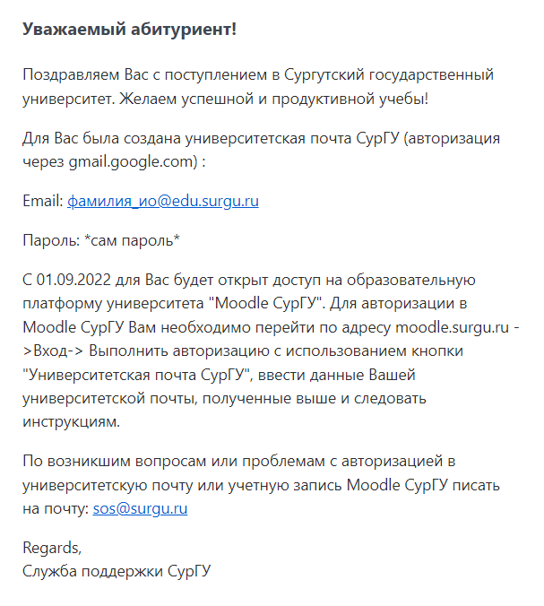

 Чтобы зайти на свой аккаунт платформы moodle нужно будет ввести логин и пароль университетской почты, которые отправили на основную почту студента. Придет сообщение с логином и паролем от Службы поддержки СурГУ. Выглядит сообщение следующим образом:
Далее, уже по мере продвижения учебы, студент сам записывается на курсы его дисциплин либо же преподаватель сам его записывает.